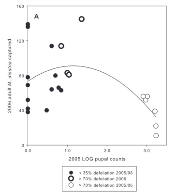

Pheromone Trap Catch May Not Be Correlated with Population Density
Press S to see speaker notes.
Simple Model
Pheromone trap and plume
Competition from natural pheromone sources
(low population density)

Confusion from natural pheromone sources
(high population density)

Improved Model

Evidence of reduced pheromone trap catch at high population density

"Our results show that trap catches not only level off at high density but actually decline at extremely high density."
Jones et al. 2009
Conclusion
- CRB pheromone traps are very usefull for detecting CRB at low population levels.
- However, trap catch and population density may be uncorrelated at high population levels.
- Perhaps other methods such as damage surveys and advanced sensors should be used for monitoring changes in CRB population density.